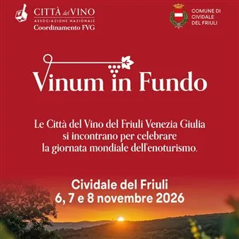

da ven 6 nov a dom 8 nov
Vinum in fundo
Assemblea della Città del Vino FVG a Cividale del Friuli in occasione della Giornata Monadiale dell'Enoturismo
 Indicazioni
Indicazioni
- Costi e prenotazioni
- Costo non indicato · Prenotazione non indicata
- Programma
- Programma da verificare. Apri la fonte ufficiale per orari e possibili aggiornamenti.
- In caso di maltempo
- Nessuna indicazione specifica pubblicata.
- Note
- Acquisito automaticamente dalla fonte.
L’EVENTO
Descrizione completa
Le Città del Vino del Friuli Venezia Giulia si incontrano per celebrare la Giornata Mondiale dell’Enoturismo.
Programma:
Venerdì 6 novembre, ore 18:30 Nell’anniversario del terremoto del Friuli del 1976 uno sguardo sui “terremoti” che hanno scosso il mondo del vino e dell’agricoltura e la rinascita negli ultimo cinquant’anni.
Modera Matteo Bellotto (scrittore e filosofo) con Bepi Pucciarelli (giornalista, consulente area agroalimentare), Pierpaolo Rapuzzi (viticoltore Ronchi di Cialla), Angelo Radica ( Presidente nazionale delle Città del Vino), Attilio Vuga (sindaco di Cividale del Friuli e già docente di Viticoltura e Storia della Vitivinicoltura e dei paesaggi vinicoli), Filippo Buttussi (Presidente del Consorzio Fiuli Colli Orientali e Ramandolo. A seguire degustazione a sorpresa di vini storici.
Sabato 7 novembre ore 9:30 - Sviluppo multilivello dell’enoturismo: dagli scenari attuali a nuove prospettive di crescita. Le Città del Vino FVG celebrano la Giornata Mondiale dell’Enoturismo. Intervengono Iole Piscolla (Città del Vino) e Promoturismo FVG. Ore 10:30 - Assemblea Città del Vino FVG
Un’associazione in salute: le prospettive dell’associazione a livello nazionale e regionale.
I progetti del 2026 e il programma 2027. Ore 12:00 - Riconoscimento alle Aziende vitivinicole della Regiona premiate all 24^ edizione del Concorso Enologico Internazionale di Città del Vino Ore 12:30 - Visita guidata al centro storico di Cividale del Friuli. Ore 13:00 - Buffet a Palazzo de Nordis Dalle ore 14:00 alle 18:00 - Degustazioni in piazza dei vini delle Città del Vino del FVG. Iniziativa a scopo benefico il cui ricavato sarà devoluto all’Associazione Friulana Oncologia Pediatrica Luca ODV (presso il sagrato della Chiesa di San Martino o alla Chiesa di Santa Maria dei Battuti in caso di pioggia). Ore 15:30 - Il Palio delle Botti delle Città del Vino. Le squadre delle Città del Vino portano in scena l’antica tradizione della Corsa delle Botti nel centro storico di Cividale.
Domenica 8 novembre, ore 17:00
EnoArmonie 2026: “Dedalo e la Mitteleuropa”.
Dedalo ensemble e sinestesie con i vini dell’Azienda Perusini.
Concerto a cura dell’Associazione Musicale Sergio Gaggia con ingresso ad offerta libera.
Per maggiori informazioni: tel. 0432 636111; mail: cittadelvino.fvg@gmail.com
IL PROGRAMMA
Programma e orari
Appuntamenti raccolti dalle fonti elencate. Dove manca un orario, non è ancora disponibile in questa scheda.
Programma pubblicato
- ore 9:30
- Ore 10:30
- Ore 12:00
- Ore 12:30
- Ore 13:00
- Ore 15:30
INFORMAZIONI UTILI
Prima di partire
- Controllare la fonte prima di partire.
ORGANIZZAZIONE